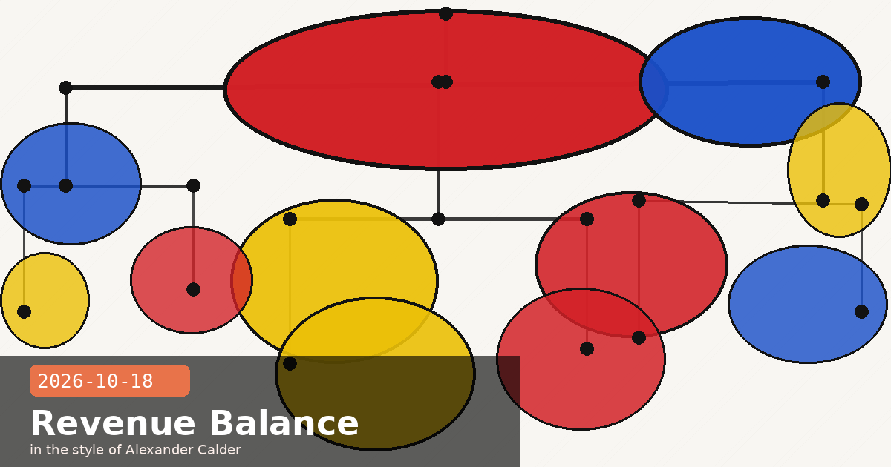

Anthropic's Q3 Profit Milestone, Valuation Debate, and Claude Code 2.1.302

🧭 Anthropic Posts $16.8B Q3 Revenue and Reaches Adjusted Profitability for the First Time
Anthropic disclosed its third-quarter financial results this week ahead of its planned Nasdaq IPO, revealing that revenue reached $16.8 billion — up 45% from Q2's $11.6 billion and more than three times Q1's $4.7 billion. More significantly, the company achieved adjusted profitability for the first time in its history, with an 85% adjusted gross margin and a cash-flow ratio of $1.70 in revenue for every $1 spent on computing power.
Year-end projection: investors briefed on ~$110B annualised run rate by Q4
The figures were shared at Anthropic's closed-door Investor Day on October 14. The adjusted profitability milestone is particularly notable because Anthropic's 2025 compute bill regularly exceeded its revenue — the company has spent several years operating at a significant loss to train frontier models. Q3 marks the point where scale of deployment has outrun cost of inference, a threshold every AI lab has been racing toward.
What "adjusted profitability" means here
Adjusted gross margin of 85% excludes the amortised cost of the training runs for Claude Sonnet 5.5, Haiku 5.5, and their predecessors. On a GAAP basis, where training costs are expensed in the period they are incurred, Anthropic is still loss-making. But the inference economics are now robustly positive: the company earns well more than the marginal cost of each token served. For API users, this structural shift is relevant — pricing pressure will come from competition, not from Anthropic needing to cover its compute deficit.
🧭 IPO Valuation Debate: Some Investors Revise Down to $1.5T as Q3 Growth Rate Cools
While Anthropic's Q3 revenue and profitability figures are strong in absolute terms, the growth rate tells a more nuanced story. Revenue grew 45% quarter-over-quarter in Q3 — robust by any ordinary measure, but a sharp deceleration from Q2's near-doubling. Reports emerging in the days after the Investor Day indicate that some current and prospective investors are now pricing the IPO at $1.5 trillion, down from the $2 trillion expectation that circulated through the summer.
The bull and bear cases in brief
Bear case ($1.5T): Growth is decelerating; compute costs will rise again as Anthropic trains the next generation of models; concentration risk (two enterprise clients account for ~25% of revenue per expected S-1 disclosures); regulatory overhang ahead of the November midterms
Bull case ($2T+): 85% adjusted gross margin is exceptional for an infrastructure-heavy AI company; first adjusted profit means the unit economics work at scale; $110B annualised revenue by year-end is a credible basis for a high multiple; enterprise stickiness is rising, not falling
Anthropic's listing is still targeted for the days following the November 2026 midterms, per Reuters. The Nasdaq is confirmed as the venue; Morgan Stanley, Goldman Sachs, and JPMorgan are underwriting. The range of investor opinions — from a September estimate of $2.4 trillion to current bear estimates of $1.5 trillion — reflects genuine uncertainty about what growth deceleration means for a company that has never had a public valuation anchor.
Editorial note on valuation estimates
All figures in this entry are investor estimates reported by financial press prior to any public S-1 filing. Anthropic has not confirmed a valuation range. Treat these numbers as a snapshot of private market sentiment, not as authoritative figures. Revenue numbers ($16.8B Q3) come from the October 14 investor briefing and are not yet independently audited.
🧭 Claude Code 2.1.302 — Client-Side Auto Mode Selection, Idle Compaction Controls, and Plugin Startup Fix
Claude Code version 2.1.302, published October 16–17, ships three developer-facing improvements worth knowing about, alongside broad reliability fixes across cloud sessions, VS Code, Slack, MCP, and plugin workflows.
What's new
Client-side auto mode model selection: When using auto mode, Claude Code now selects the model on the client side rather than delegating to the server. This makes model choice visible and predictable in logs and telemetry — helpful for teams debugging why a particular model was chosen for a given task.
Idle compaction controls: A new setting lets you configure when (or whether) Claude Code triggers conversation compaction during idle periods. Previously, compaction could fire unexpectedly mid-session if the context window approached its limit while the user was paused. You can now set an idle threshold or disable idle compaction entirely.
Faster startup with many plugins: Startup time with a large plugin set has been noticeably improved. Teams running custom MCP tool suites of 20+ plugins will see the biggest gains.
Notable bug fixes
Fixed: "Prompt is too long" error when stopping a turn during conversation compaction
Fixed: Requests failing with diagnostics: Extra inputs are not permitted after switching to Vertex or Bedrock mid-session
How to use idle compaction controls
In settings.json (or via /config), set "idleCompactionThresholdSeconds": 0 to disable idle compaction, or set a positive integer (e.g. 300) to delay it until the session has been idle for that many seconds. The default behaviour is unchanged if you don't set this key. Useful for workflows where you step away mid-task and return to a clean context window — or for benchmarking sessions where you explicitly control when compaction fires.